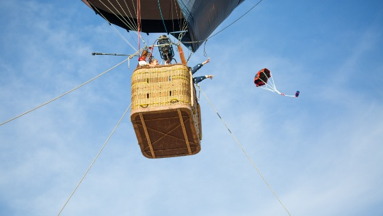
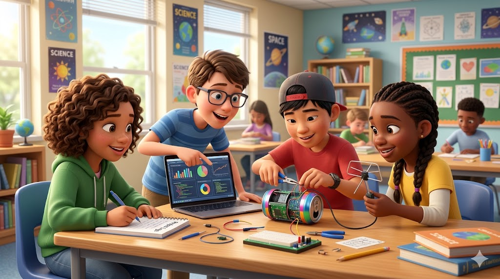

Explorando el espacio con MiniCanSat
¿Quién no ha soñado alguna vez con lanzar su propio satélite al espacio?
Con MiniCanSat, nos convertiremos en ingenieros espaciales y exploraremos el universo desde nuestra aula.

En este proyecto aprenderemos cómo funcionan los satélites, construiremos nuestro propio MiniCanSat y analizaremos los datos que recopilemos en su misión.
¡Preparados para despegar y descubrir el mundo de la exploración espacial!
MiniCanSat es una iniciativa educativa pionera en España que nos permite participar en un proyecto inspirado en la competición CanSat de la Agencia Espacial Europea (ESA). Surgió en el curso 2022-2023 con el propósito de acercar la ciencia y la tecnología espacial a nuestras aulas de manera práctica y motivadora.
En la I Competición Regional CanSat Extremadura 2023, celebrada el 3 de mayo de 2023, se incluyó por primera vez esta modalidad no competitiva, en la que 200 estudiantes de primaria, organizados en 40 equipos, lanzaron sus propios MiniCanSat. Durante los meses previos, los equipos recibieron acompañamiento y formación para diseñar, construir y probar sus proyectos.
{kind=link}

Desde su lanzamiento, la iniciativa ha sido adoptada por otras comunidades autónomas bajo distintas denominaciones, como CanSat Baby, expandiendo su impacto y permitiendo que cada vez más estudiantes descubran la emoción de la exploración espacial desde una edad temprana.
Este proyecto ha sido diseñado para ofrecernos las herramientas necesarias para guiar nuestra misión espacial, fomentando el aprendizaje cooperativo y despertando nuestro interés por la ciencia y la tecnología.